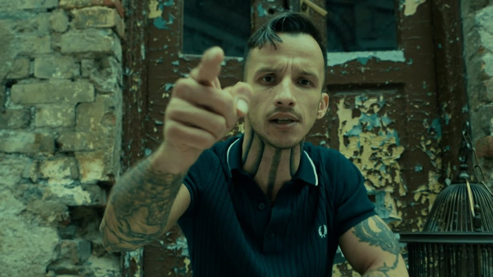
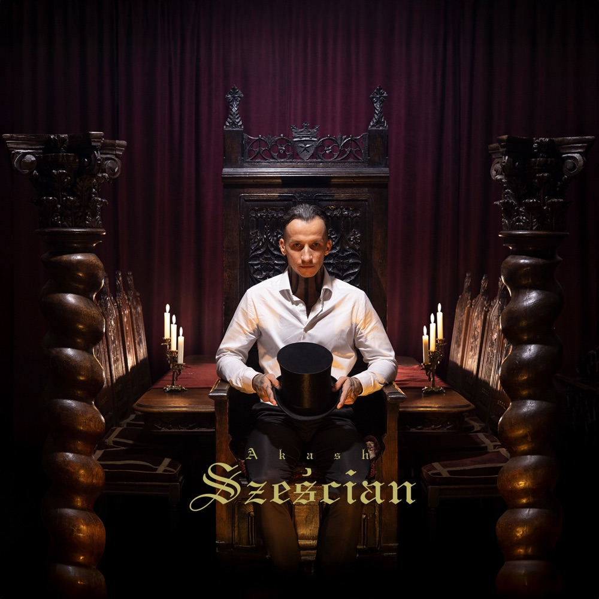
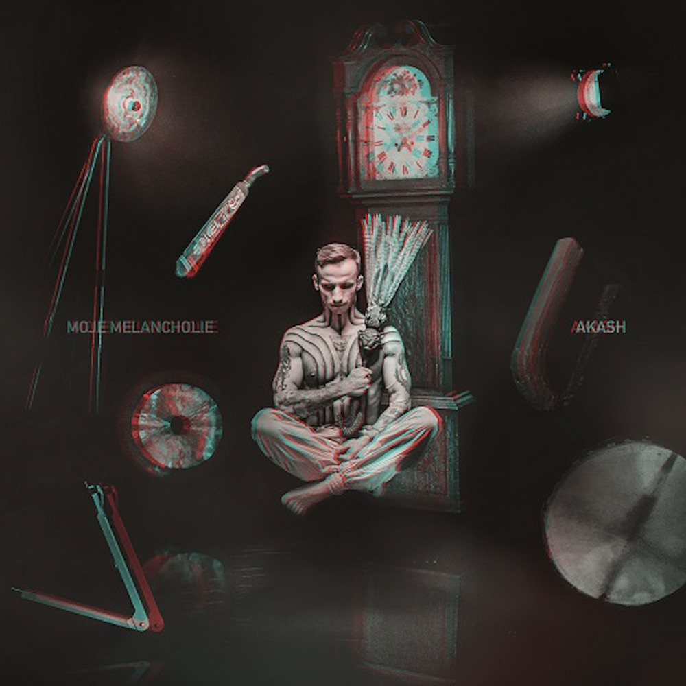
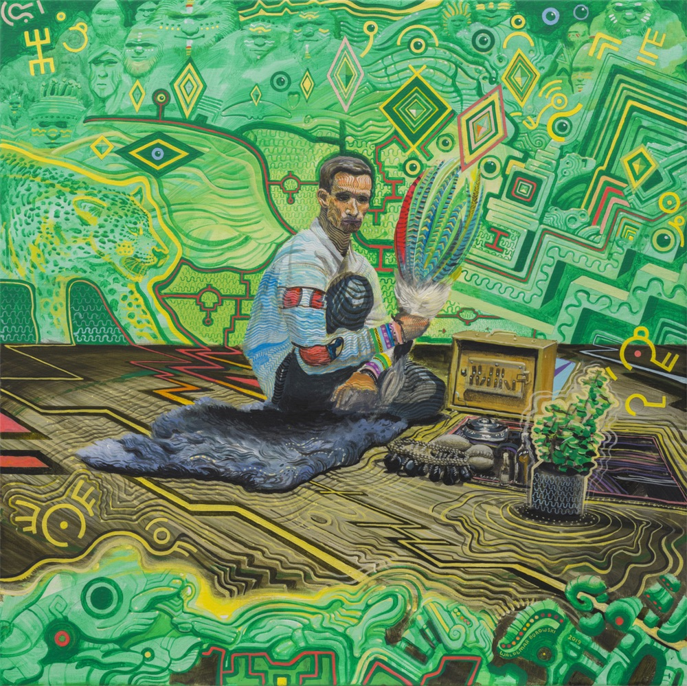
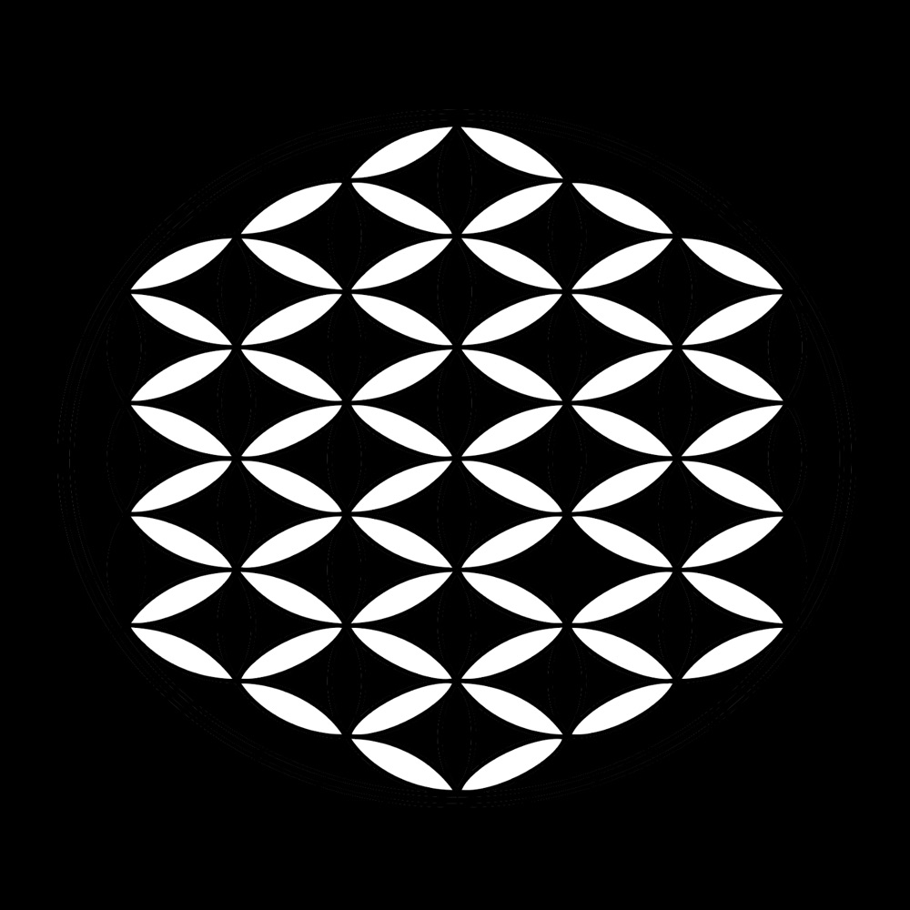
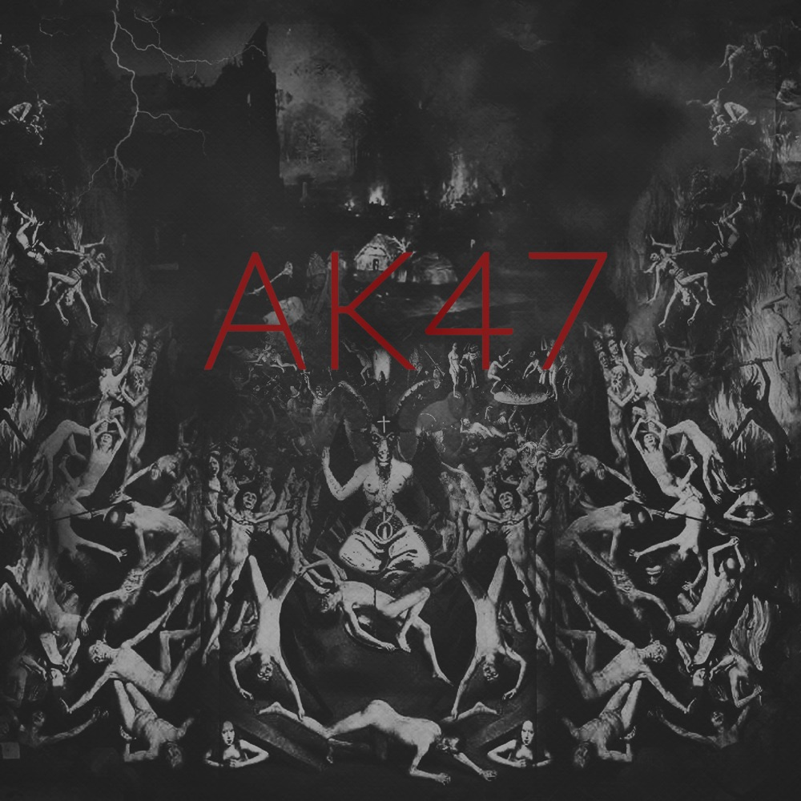
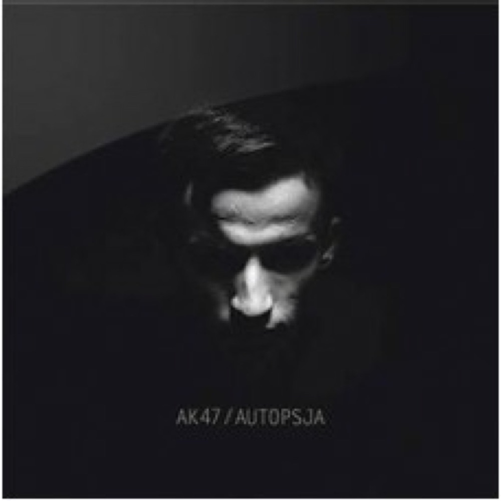

dawniej AK-47 · od 2022 AKASH
AKASH
„Światło jest dźwiękiem"
Akash — sanskryckie przestworza, eter, nośnik dźwięku. Sześć albumów. Jedna droga: od ulicznego mroku ku światłu. Wejdź do galerii i przejdź ją wstecz — od dziś ku początkowi.

Narracja
Od pancerza do eteru
Twórczość AKASHA to jedna opowieść w rozdziałach — zstąpienie w mrok, czyściec winy, powrót do Źródła i rozpłynięcie w przestworzach. Każda płyta to inne pytanie. Każde pytanie to inne światło.
- 2013Autopsjasekcja duszy
- 2015Pierwszy dzień w pieklesiedem grzechów
- 2016Czyściecciężar winy
- 2020Źródłopowrót do światła
- 2022Moje melancholieoddech po drodze
- 2025Sześciangeometria światła
Showroom
Sześć eksponatów
Od najnowszego ku najstarszemu. Każdy eksponat narzuca galerii swój kolor — przewijaj, a światło zmienia barwę.






Słuchaj